17615123212
aszeroflag#live.com
zifux.github.io
Kotlin编写的控制台应用，可将LuaJIT的Bytecode反编译为Lua代码。
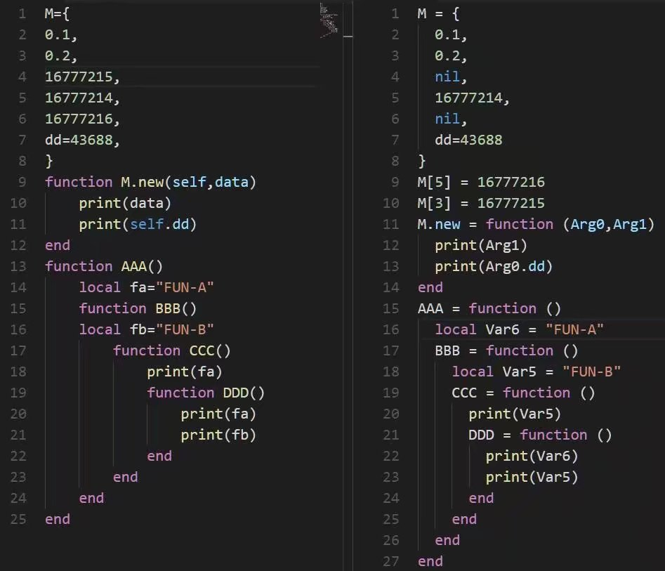
java编写的手机应用，BiliBili客户端的辅助程序，直接将非标准的多个blv合成为mp4视频。
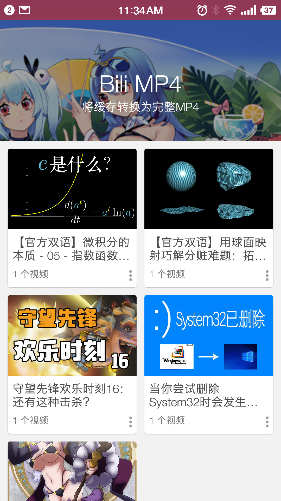 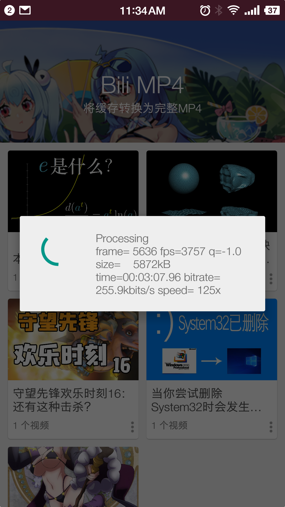 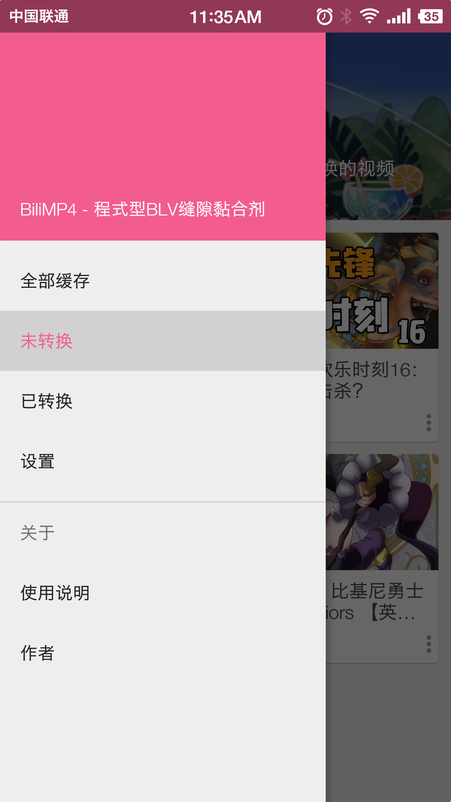
java编写的手机应用，分析教务处课表获得空闲教室信息，兼容教务处后台。
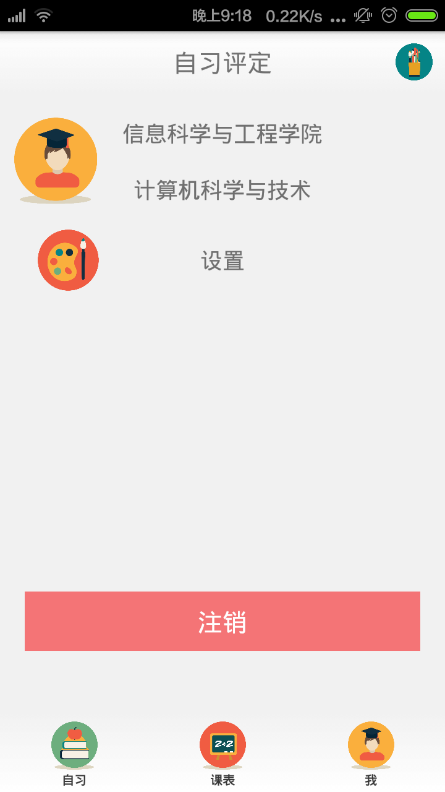 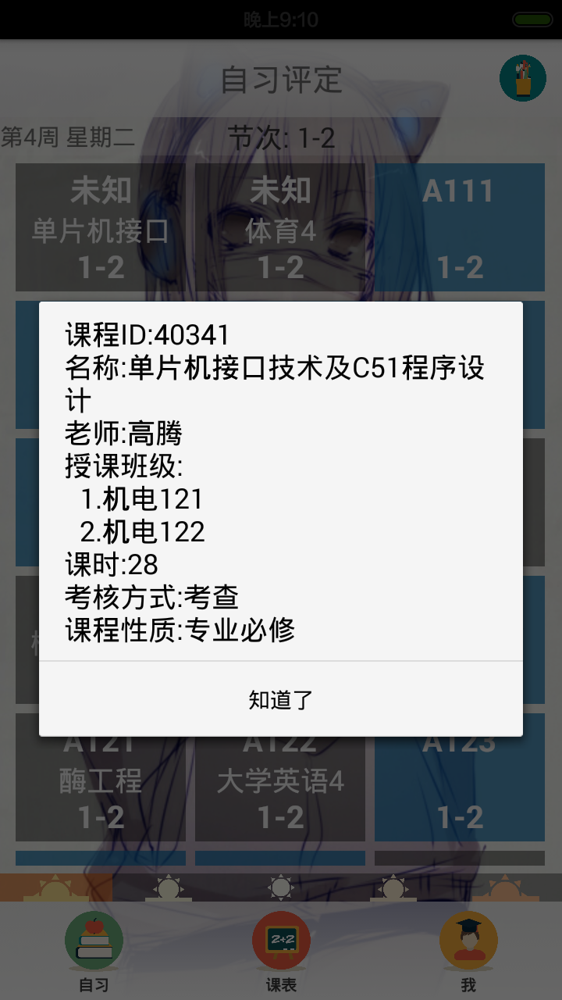 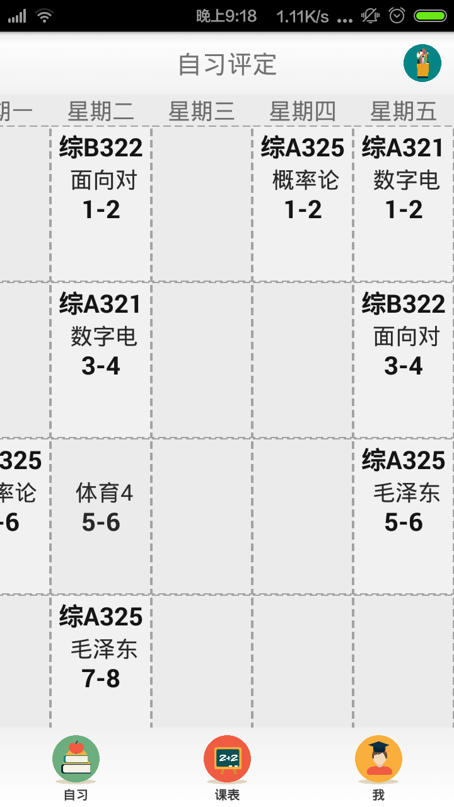 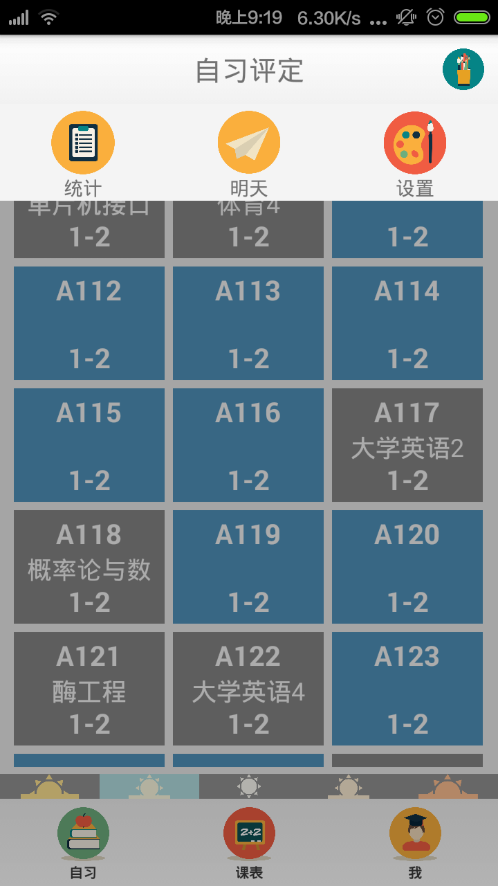
使用 Spring4 Struts2.5 Hibernate5 框架，Maven管理依赖，Git管理代码。前台使用Bootstrap。
PHP/Javascript编写，每个访问者都在同一个画板上以像素为单位作画，共同完成一幅像素画。访问>>
Node.js编写，采集多个视频网站视频信息并聚合，用于方便追番的网站。
UnityShader编写的着色器，实现类似崩坏三(手游)的非真实渲染。
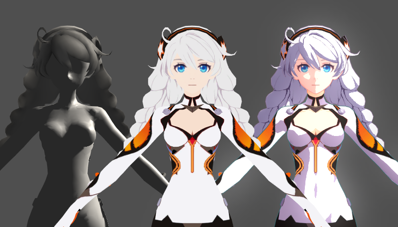 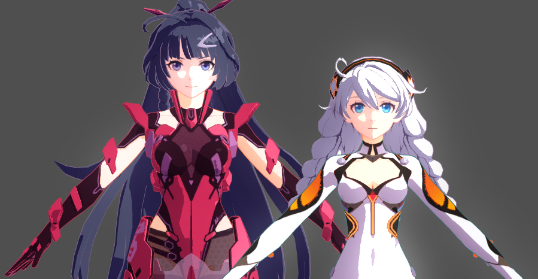
C#编写的桌面应用，用于实时显示指定网卡的网速，开机自启可更换样式。
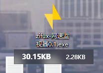 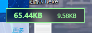
在大一的时候为了蹭对面饭店的WIFI，编写暴力破解脚本。不过效率不高，室友靠没事瞎蒙弱密码也成功连上了WIFI。
大二学校提倡教师布置线上作业，先是在老的线上作业平台布置，老平台看界面就知道是很久之前的，答题模块的简单漏洞也挺多，其中一个就是可以通过手动添加提交按钮，成功提交已经逾期不收的作业，以及查看往届作业的题目并获得正确答案，用于考试参考。
之后学校引进了一个新的线上作业系统，是在外网提供服务，学校入住的。这个系统界面看起来很正规，各项功能也很完善，不过依然有令人无语的漏洞，前端JS脚本中有判断权限的相关代码，并根据身份跳转到不同网址，而其教师管理网址却没在后台做限制，虽然界面不完整，但普通用户依然可以对作业进行修改，当然我只把一份忘记做的作业截止日期稍微修改了一下。
接着我发现一个偶尔会去的番剧网站存在一个小漏洞，它的验证码生成是根据GET中的参数生成的，其中包含验证码的大小，我编写了一个简单的脚本不断请求非常大的验证码，导致网站无法访问，在询问其他人也无法访问该网站后停止了实验且再没有使用。
在一些课余时间我会到教学楼学习，不过一般教学楼大部分教室都在上课，因此我决定编写一个查看空教室的APP，后又希望与教务处对接，但教务处登陆需要验证码，因此我用K临近算法编写了教务处的验证码识别器，由于教务处的验证码非常简单规整，因此成功率还挺高的。
在大二我一心想做个视频网站，学了PHP，又被忽悠去Node.js，前端先是jQuery，后来开始用AngularJS，实在用不下去了，又开始自己写框架。弄来弄去最后虽然处处想着通用兼容模块，但结果不尽人意，只好暂且搁置了。这时候我也感觉到了软件工程的必要性。
由于使用了Node.js，我开始关注websocket，发现了开源库SOCKET.IO，当时SOCKET.IO还是1.0的版本。我用它写了一个界面也挺漂亮还带聊天记录的匿名聊天网站，当然目的也仅是研究学习，写的差不多就不再更新了。
我偶尔有编辑视频的需求，但是尝试了几款软件都感觉速度太慢，重要的是我只是剪切一下根本没必要重新编码。于是遇到了FFmpeg，真的是非常棒的开源软件，之后我也使用FFmpeg用C编写了一个简单的视频播放器，了解了一些视频编码解码的知识。再之后我发现手机BiliBili客户端缓存的视频不能转换为MP4，不能方便的发送到其他设备播放，因此使用FFmpeg制作了一个手机应用，用于将缓存的多个blv文件合并为一个标准mp4文件。
偶然看到了共同像素绘画的活动，我知道的先是Pixiv接着Reddit，之后Bilibili也推出了这类活动。我也觉得很有意思，自己实现了前端与后端。前端用的HTML5的Canvas与一个开源调色板，后端使用PHP与MySQL，虽然不算火但当时也有很多人参与进来共同绘制了许多有趣的图案。
近几年版权意识逐渐加强，国外引进的番剧也大多正版化，多个视频网站抢夺独播权，导致看番不像之前那样可以在一个网站解决，于是我用Node.js写了一个采集多个视频网站的追番网站，整合来自不同视频平台的番剧，方便追番。
不得不说国内安全软件太贴心，我实在是受不了，因此都卸载了，使用Windows自带的安全软件。不过看实时网速变得很不方便，所以自己用C#写了一个方便看网速的小程序， 查看上传下载速度还能换个主题，全屏隐藏，基本满足了我的需求。
前段时间碧蓝航线(手游)很火，于是把包解开想看看代码，发现他们是用Lua写的，做的热更新，Lua代码解压出来是LuaJIT的ByteCode，很难阅读，网上也没发现比较好的LuaJIT反编译工具，于是决定自己写一个。最开始我是打算使用Java编写，后来想起来Kotlin，于是决定一边开始学Kotlin一边写反编译器，目前还需要优化反编译出的代码。
在Unity官方学习了多个游戏教程并跟着教程做了4个小游戏，之后将目光转向了UnityShader，通过编写UnityShader，实现了类似崩坏三(手游)的渲染效果。难点主要在于分析崩坏三中自定义的光照贴图每个通道的作用，而让我意外的是主纹理的Alpha通道也被用作特殊用途，通过这个过程让我也了解了很多相关知识。